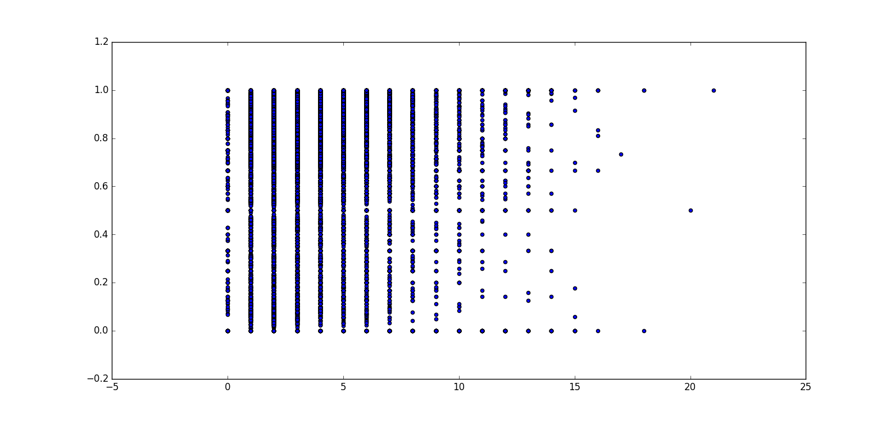
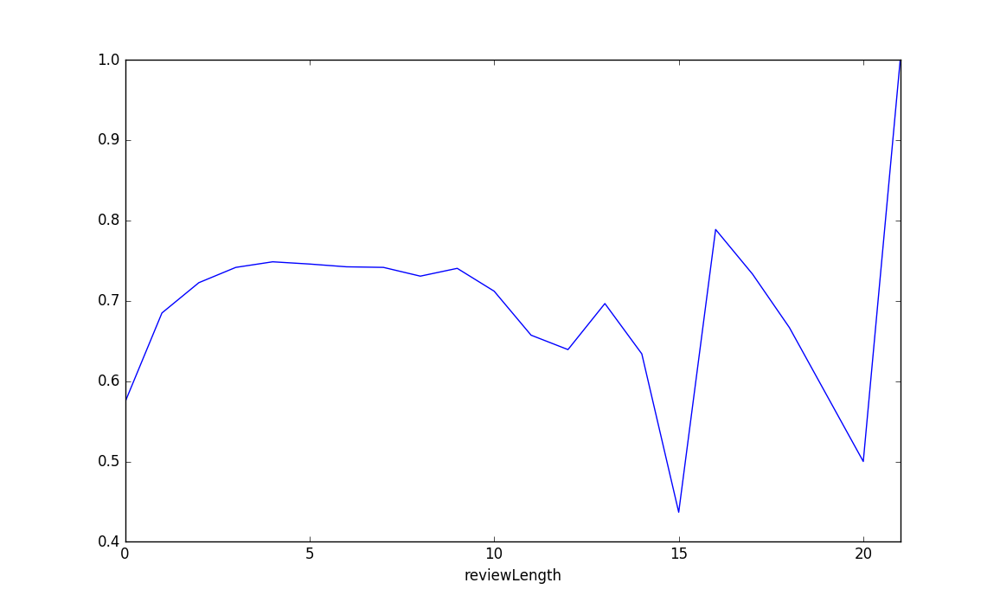
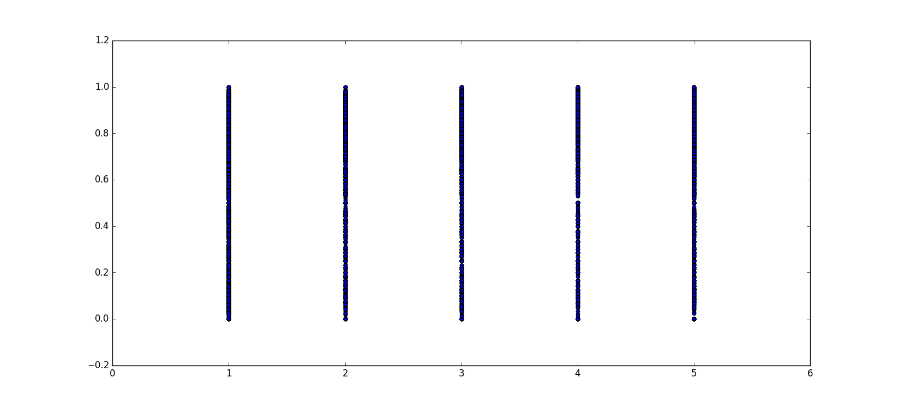
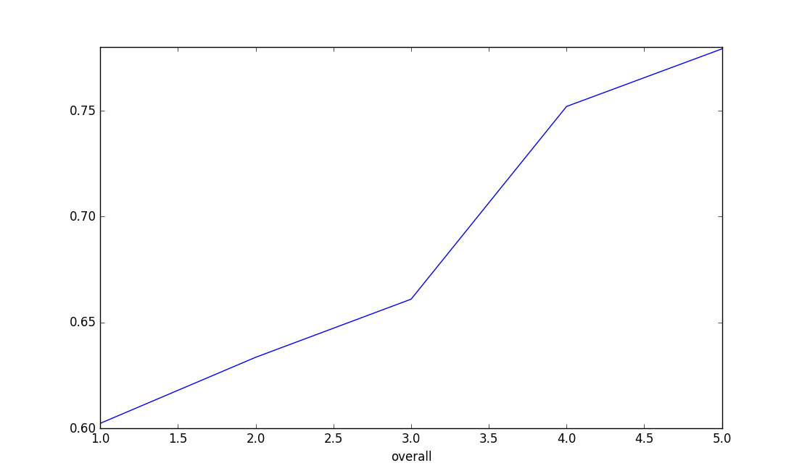

Results
I've analyzed Amazon Reviews of Baby Products to answer two questions:- Q1. Are there any relationship between length of the reviews and the helpfulness scores given by users?
- Q2. Are there any relationship between review scores and the helpfulness scores given by users?
Q1
Helpfulness score in amazon reviews consists of two numbers [x, y], where x is the number of people who found the review helpful and y is the total number of people who voted for helpfulness or unhelpfulness of the review. Let's first compute a helpfulness percentage by dividing x/y. Then we need to compute the length of the review (excluding stop words and punctuations). Now we can plot the helpfulness percentage on the y axis and review length on the x axis as shown below.
It looks like that when the length of the review is between 1 to 7, there is not much variety between the helpfulness scores. Now let's compare average helpfulness percentage for each length.

Again, it looks like there is not much difference in average helpfulness percentage for each length (other than two data points). Therefore, visually we did not find any indication that helpfulness percentage and length of review are related.
Q2
Now let's plot the helpfulness percentage on the y axis and overall review score on the x axis as shown below.
There are so many data points and visually there is not much variety in the helpfulness scores for each overall review score. Now let's compare average helpfulness percentage for each overall score.

Interestingly as overall score increases more people find reviews helpful on average. But, more analysis needs to be done to find out if this increase is significant.